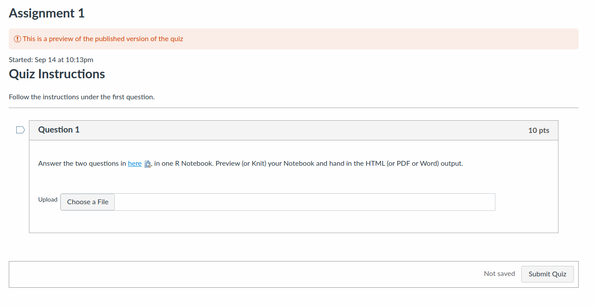

STAC32
Applications of Statistical Methods
Ken Butler

bad picture
Welcome to the home page for STAC32. This is the place to look for all things course-related (notes, assignments, announcements etc., linked above) except for assignment hand-ins and marks, which will be on Quercus.
This is an applied course. Expect to be describing the process by which you got your answers, and explaining what the answers mean in the context of the data you are working with: that is to say, using your language skills as well as your statistical skills. Be prepared to show your understanding and insight; this course is about a lot more than “getting the answer”. In real life, people do Statistics to make decisions or inform actions, and you will be expected to play your full part in that process, both in this course and in your statistical future.
News (times are Toronto time):
2020-10-09 15:30: I am accustomed to using Brave as my web browser, but in there, the lecture videos on Quercus seem to have disappeared. They are there just fine in Chrome, however. So if you are having trouble finding them, try Chrome first, and if you still cannot see them, let me know.
2020-10-07 10:30: in preparation for tutorial, watch the combined lecture 8/9, and begin working through Chapters 10 and 11 of PASIAS. Bring questions/confusion/discussion to the tutorial. We will be waiting to help you. (Lecture 10 does not appear on assignment 4; that’ll be on assignment 5, after reading week.)
2020-10-06 12:00: My solutions to Assignment 3.
2020-10-03 14:20: I am about to release the Assignment 2 marks. Some of them are rather low. If that is you, pay close attention to the comments. In this course, you are expected to know when to run a hypothesis test or confidence interval, as well as how to do it and what the results mean. If any of this is unclear to you, it might be a good idea to go back and reread the appropriate parts of your first Statistics course (STAB22 or equivalent), since we will be doing a lot more of this kind of stuff in this course and the next one.
2020-10-02 13:15: I messed up Question 2 on Assignment 3. If you’ve already started it, go back and download the question file again. It now has a null hypothesis value to use. Sorry.
2020-10-01 13:00: The video pages on Quercus now have week numbers and dates on them. For me, week 6 is the week after reading week, and we go up to week 12. Thus, week \(n\) has lectures \(2n-1\) and \(2n\) in it.
2020-10-01 12:30:
- I realized that I had forgotten about reading week, which is October 10 through 16. Thanks to the people in tutorial for reminding me.
- Then I had to figure out what to do about Assignment 4. Since we will have a tutorial on October 7 as usual, it seemed to make sense to have it due shortly after this, while the discussions are still fresh. But I didn’t want to make you have to work on Thanksgiving weekend. So I am opening Assignment 4 a day earlier than usual, on Thursday October 8, so that you’ll have an extra chance to work on it before the weekend. The due date is still Sunday night and you still have three hours to work on it from when you start.
- This will give you a full week off (from this course at least). There is no tutorial on October 14, and there is no assignment due at the end of that week. Assignment 5 will be due on October 25, and there will be a tutorial on October 21 to deal with any questions on that or related issues.
- If this causes a problem for you, let me know. But the rationale is to give you a full week off (or to review things or to get caught up, if that’s what you need).
- I am now going to go back to Quercus and put dates on the weeks, so that we know where we stand. I don’t want to give the reading week a number, because that will only confuse me!
2020-09-30 11:35: reminder of tutorial this afternoon. For this week’s tutorial, (re-)watch lectures 6 and 7, on power of tests and the sign test, and start working through PASIAS chapter 8 and problems 9.1-9.3. (The remainder of Chapter 9 is on Mood’s median test from lecture 10, so don’t worry about those problems yet.)
2020-09-30 11:30: I just recorded Lecture 10, which will be going up on Quercus shortly (after it has finished processing). This is the first half of the fifth part of Inference (are you confused yet?), on Mood’s median test, which is likely to be new to you, though the ideas on which it is based are mostly familiar ones. Lecture 11 will be on analysis of variance, which will be familiar to you from your second stats course, though there are some additional things that you will probably have not seen before. This means, looking way ahead, that Assignment 5 will be on the material in these two lectures.
2020-09-28 15:00: two things:
- my solutions to Assignment 2 are up. Study these now, together with the Assignment 2 that you handed in, or later, when you get your graded Assignment 2 back, together with the grader’s comments.
- for this week’s tutorial, (re-)watch lectures 6 and 7, on power of tests and the sign test, and start working through PASIAS chapter 8 and problems 9.1-9.3. (The remainder of Chapter 9 is on another test that we will see in Lecture 10, so don’t worry about those problems yet.)
2020-09-27 10:30: The Assignment 1s are graded, and you have your mark. The grades are on the scale shown in the course outline, page 10. You have some comments on your work, which you should read together with my solutions to see what kind of work we were expecting. The point is that you need to both have and display understanding; the people that display the best understanding and insight are the ones that get the best marks. If you are unhappy with your mark, read the grader’s comments and my solutions to see how you can do better next time.
2020-09-25 19:30:
- The Assignment 1s are still being graded. The grader is working as fast as he can.
- Today I recorded Lecture 8 (the second one of this week). This came out just over an hour again, and since I promised not to give you too much to watch, I have called this one a combined Lecture 8 and 9, so that Assignment 4 will be on just this lecture. (I thought about splitting this one into two, but there didn’t seem to be a good place to do it.)
2020-09-25 00:05: Assignment 2 is open. You have three hours to complete it from whenever you start. It is due on Sunday night, 11:59pm, Toronto time (which I think is Monday noon in China).
2020-09-23 10:20:
- Assignment 1 is being graded. I had forgotten that the right thing to do is to hide the grades from you until everyone’s work has been graded, so that some of you may already have seen a grade, and some of you may have seen a blank grade. I have hidden everything again for now. Everyone’s work will get graded and will receive comments, and everything will be released together at the end. So no need to worry.
- I am conscious that I have given you too much to watch. I will be recording “lecture 8”, and seeing how long it is. If it is long again, I will either split it into two parts, or call it Lecture 9 and move it to the Tuesday of week 5 (so that in that case there would be no lecture 8). I also find that when I record lectures, I tend to go faster than when I give them in person. I appear to have 16 sections of the notes, which I may subdivide to make something like 24 lectures, or have some of the numbered lectures go missing. In any case, each week’s assignment will still be based on the lecture that goes with the Thursday of the previous week and the Tuesday of that week, so that if either of those is missing, the corresponding assignment is based on only one lecture. I will keep the numbering so that assignment \(n\) is based on lectures \(2n\) and \(2n+1\), or whichever of those exist, in the hopes of minimizing confusion.
2020-09-22 14:30: Assignment 2 is on lectures 4, 5 (and maybe 5a). So, in preparation for this week’s tutorial, watch at least lectures 4 and 5, and work through at least some of chapters 5, 6, and 7 of PASIAS.
2020-09-22 14:20: my solutions to Assignment 1.
2020-09-21 16:00: the first lecture of next week (lecture 7 in week 4) is now up. This is another hour-long lecture, so will try to give you less to watch in the rest of week 4. Assignment 3, when it comes around, will be on lectures 6 and 7.
2020-09-18 18:50: I’ve been recording more videos. Week 3 (that is, next week) is now done. The videos are on Quercus. There are three of them; the two lectures plus a bonus extra-insight one. I have also added the appropriate PASIAS chapters under each one. I realize that I have given you a lot to watch this week, so will aim to keep things under control for week 4. If you want more problems to work on, you can look at the old midterms; these were for writing by hand originally, but you can answer the questions by typing the code into an R Notebook and running it, then seeing that you got the same thing as I did (in my solutions).
2020-09-17 15:45: I just made an extra video. In lecture 5 (which is actually the first one for next week, so you probably haven’t watched it yet), I talked about how the \(t\)-tests and intervals strictly assume a normal distribution of your data, but there is also the Central Limit Theorem, which says that the larger the sample you have, the less the normality matters in judging whether it’s safe to use a \(t\)-test. So what you have to do is to ask whether your data look normal enough, given the sample size. This can be hard to assess. In the extra lecture, which I think will have to be called lecture 5a, I talk about a more advanced way of assessing “normal enough” called the bootstrap, which will make sense to you if you understood that stuff about “sampling distribution of the sample mean” from your first course. The bootstrap is an idea that will be new to you that looks like magic. The video will be up, with links to slides and code, once mymedia has finished processing it.
2020-09-16 13:20: See yesterday’s note to see what you might want to be asking about in today’s tutorial. Check the Quercus Announcements for the link to the tutorial zoom meeting. (It’s an announcement I made last week and edited just now.)
2020-09-15 22:50: reminder to prepare for the tutorial tomorrow by making sure you’ve watched lectures 2 and 3, and that you’ve begun working through PASIAS problems:
- reading in data from files: problems 3.3 and 3.4 (3.3 will look familiar; skip it if you if you’ve done it before)
- making graphs: chapter 4, problems 4.1-4.3
This is your last chance to ask about things that confuse you ahead of Assignment 1 (which will be on the material in Lectures 2 and 3).
2020-09-14 22:15: I just put up the first Assignment, which is of no consequence to you (yet) since you cannot start it until Friday. The reason for saying this now is that I had to set it up as a Quercus Quiz, which looks a little different than an Assignment. (If I had been thinking, I would have made Assignment 0 a Quercus Quiz as well). The screenshot below shows what you will see. You will click on the link in Question 1 to see my questions for you (there are actually two of them), then, when you are done, click on Choose a File to find your previewed/knitted notebook, and then Submit Quiz to submit it. (The picture below is only a screenshot, so you won’t be able to click on anything here. I just wanted to give you a sense of what to expect.)

2020-09-14 13:00:
I recorded Lecture 4. The best place to watch it from is the Quercus page, where there are now also links to the lecture slides and my code files (the ones from before lecture and the final version of the file I edited during lecture), for both weeks 1 and 2.
Just so you know, lecture 4 is “Thursday’s lecture”, and the material in it is on Assignment 2, so there is no need to watch it until after tutorial this week.
2020-09-13 21:30: If you decide to Knit your R Notebook to Word, there are some extra issues to think about. I made a 10-minute video illustrating what can happen.
2020-09-13 13:35: For Tutorial 2 (in week 2, next Wednesday), here’s what I want you to think about, preferably before you come to the tutorial:
- watch Lecture 2 (“last Thursday’s lecture”) and, in due course, Lecture 3 (“next Tuesday’s lecture”, but it is up already). Make a note of anything that seems confusing.
- tackle the problems from PASIAS that I mentioned in the 2020-09-10 14:20 note. For full value (to you), tackle (or at least think about) each part before you look at my solution. Make a note here of any difficulties that you run into. (You might find that these problems help you with your questions from the lecture. Or you might find that there were some things you thought you understood from the lecture that you realize you don’t.)
- bring any remaining questions to the tutorial. If you want to, you can start/continue working on the problems during tutorial, and ask questions as they come up.
- (extra note from me) Working on problems is a much better way to find out how much you really understand, compared to something like reading through your notes. This is generally true (there is research to back it up), but it is particularly important in a course like this, where I will want to see that you can do something sensible with a data set that is new to you.
2020-09-13 13:30: I just took a quick look through the “Assignment 0” that were handed in. Everyone handed in something I could read; if you did that, you’ll have a comment “yep”, regardless of what the content was that you handed in. (I didn’t really care about what it was, just that there was something and I could read it.) If you are planning to hand in Word output, there is an extra thing you might want to think about (to make your work easier to read), which I’ll make a video about later.
2020-09-11 11:00: More of you than I expected are running R Studio on your own computers, which is actually a good thing (just not what I was expecting). There are things to bear in mind, though, that look a little different in the two places:
on
rstudio.cloud, all the files you make (the R Notebook, the HTML/Word/Doc output from Previewing it) are on the cloud, so if you are going to hand any of those in, you need to get them onto your own computer first. This is where the Export stuff comes in. Get the file fromrstudio.cloudto your computer first, and then get it from your computer to Quercus, when the time comes. Likewise, if you have a data file on your computer that you want to read into R onrstudio.cloud, you will have to upload it to your filespace there before you can read it in.with R Studio on your own computer, all the files are on your own computer, so there is no need for uploading or exporting (and you can ignore all that stuff). The way I recommend is to create a New Project called something like STAC32 (in R Studio), and every time you open R Studio, also open that Project.
- At the top right, you see the name of the project you’re currently in (it might say No Project), and if you click the down arrow next to it, you get a list of your recent projects. So when you open R Studio in the future, you can easily come back to your project for this course.
A project is associated with a folder, so all the previewed notebook output you create will be in that folder. When it’s time to hand something in on Quercus, the file you need to hand in will be in that folder, and you’ll only need to browse to it on Quercus when you hand it in. Likewise, if you have a data file on your computer,
file.chooseor something similar will enable you to find it and read its data into R.for most of the work on assignments, you will be reading data files from the web and that looks the same whether you’re on your computer or on the cloud. For the HTML or whatever output that you will be handing in, if it’s on the cloud, you will definitely need to get it onto your computer first, because there is no way (that I know of) to get it directly from the cloud to Quercus.
If you are using
rstudio.cloud, one of the options on Preview is pdf output, and that should work from there (and produce output that looks more like my Assignment 0). On your own computer, pdf output will likely not work because you do not have a thing called LaTeX (which is what powers the pdf output). If you want to play with that, the easiest way I know is to installtinytex. Follow the two lines of instructions here under “For R Users” (near the top), in the R Console, and ignore the rest of that website (unless you are very brave). Then getting pdf output should work.I have no preference for what you hand in for assignments. The default HTML output that comes out of Preview is perfectly good.
2020-09-10 15:00: here is Lecture 3, in the unlikely event that you want to watch it yet.
2020-09-10 14:20: assignment 1, therefore, due at the end of next week, will cover reading in data and making graphs, from Lectures 2 and 3. In preparation for that, here are some things from PASIAS to work on. Ask about any of these in tutorial next week:
- reading in data from files: problems 3.3 and 3.4 (3.3 will look familiar; skip it if you if you’ve done it before)
- making graphs: chapter 4, problems 4.1-4.3
- graphs plus interpretation plus some extra ideas: chapter 5, problems 5.1-5.5
There is a bit of overlap between what is in Chapter 5 and what is in Lecture 4 (which will be part of Assignment 2), so if you run out of time between now and next week, the thing to skim over for now is Chapter 5. But working through it will give you some good preparation for what is coming up.
If you want to keep up to speed: Assignment \(n\) will be on the material in lectures \(2n\) and \(2n+1\), at least for the time being.
2020-09-10 14:15: I just finished recording lecture 3. I will put it up on Quercus shortly, though you don’t need to watch it until about Tuesday of next week. There were only 17 slides, but I had a lot extra to say, so you will gain a lot by watching the lecture (as opposed to just reading the slides). R code here and the edited code here.
2020-09-09 13:30: today in tutorial, we’ll be working through this.
2020-09-08 15:05: tutorial information for tomorrow is in an Announcement on Quercus. I am not publishing things like that here where anybody can see them; that will be on Quercus where only registered students can see.
2020-09-08 15:00: the updated R Notebook after Lecture 2 is here. I think the only material change is the bit right at the end. The lecture itself is here. You will probably need to login with your UTorID to see the lecture.
2020-09-08 12:00: I am about to record lecture 2 (that is to say, “Thursday’s lecture”). This is about reading files into R. To follow along, the slides are here and the R Notebook that I will be running things from is here. To use the latter, open R Studio as per the instructions in Lecture 1, create a new notebook, delete everything except the first four lines, and paste in what you see at the link. I am probably going to add some things to the code; I will put up the revised notebook afterwards, so that you have a record of it.
2020-09-07 15:00: Lecture 1 is now up.
2020-09-05 17:15: weekly plan for you:
Monday:
- (if there was an assignment due Sunday night) read through my solutions to the assignment you just handed in, and read through your graded assignment when you get it back, paying particular attention to the comments.
Tuesday:
- watch Tuesday’s lecture (the odd-numbered one for the week). This should be up by about lunchtime.
- start work on the PASIAS problems from the lecture
Wednesday:
- see where you are having trouble with material from Tuesday’s and last Thursday’s lectures (after week 1), or with the PASIAS problems
- bring these questions to tutorial. Be prepared to share your screen so that we can see where you got to.
Thursday:
- watch Thursday’s lecture, which should be up around lunchtime
- if you have time, start work on the PASIAS problems from the lecture
Friday through Sunday:
- pick a three-hour time-slot to work on the week’s assignment.
- the assignment becomes available on Friday at 00:01, and is due on Sunday at 11:59pm
- once you start the assignment, you have 3 hours to complete it.
2020-09-04 15:15: I met with my TAs this morning, and I think we have hashed out a system for tutorials:
- these will be on Zoom. I will publicize the address later.
- join the main room with your sound and (if you prefer) video off.
- if you have a question, “raise your hand” in Zoom (click Participants, and look for it at the bottom. If you don’t see it, use one of the others). One of us will invite you to a breakout room to discuss your question. If it is a computer-related question, it might help to share your screen; you can do this without having video enabled.
- you can also use the chat if you like; we will be keeping an eye on that, but it may take a minute to get to a chat question.
- the first tutorial will get you started with R and R Studio via
rstudio.cloud. The problems you’ll be doing are here; you can take a look ahead of time if you like, but this will probably make more sense after Lecture 1 (next Tuesday). The first tutorial is in week 1, on September 9.
2020-09-04 15:00: I somehow forgot to mention PASIAS, a collection of Problems and Solutions in Applied Statistics, with answers (and additional comment). I will suggest some problems from here to work through in later tutorials. (The first tutorial is different. I’ll get to that in a minute.)
2020-09-04 13:10: I made a video in which I add a bit more to the course outline, including some more of my reasons for things. You might need to log in to see the video if you use the direct link. By way of organization, I made a Module in Quercus to hold all the videos, and within that there is a Page for every week. The actual lectures, the ones that talk about the course material, will be numbered from 1 to 24 and I will include what they are about in the video title, so that you can find what you are looking for. The video I made yesterday is really a preamble to the course, so I called it Lecture 0.
2020-08-17 16:15: I have been spending the summer trying to work out how to run this course online. I think I finally have something I’m happy with. Details, and my reasons for them, are in the course outline. Highlights:
- 2 hours of recorded (by me) lectures per week, watch when you like.
- 1.5 hours of real-time tutorial per week (on Zoom), where you can work through problems and ask questions with the TAs and myself available to help.
- assessment: weekly (approx) assignments (drop worst 2) and a final project. To get an A grade you will need to average “good” work as described in the course outline. The graders will give you feedback on how you can make your future work better.